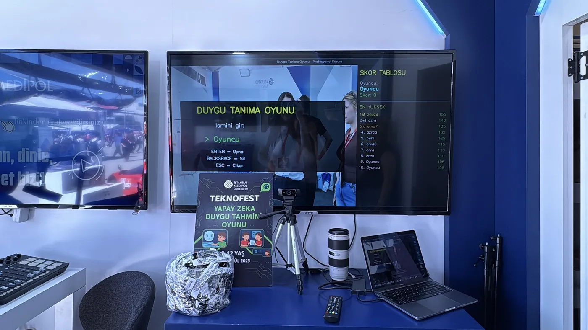

Overview
A convolutional neural network reads a live webcam feed and classifies each face into one of seven expressions — angry, disgust, fear, happy, sad, surprise and neutral — with a confidence score, in real time on ordinary hardware.
At TEKNOFEST 2025 it ran as Duygu Tanıma Oyunu, the emotion-recognition game: visitors typed their name, played a round in front of the camera and landed on the leaderboard.

How it works
- DetectOpenCV’s Haar cascade finds every face in each frame.
- PrepareEach face is cropped, converted to grayscale and resized to 48 × 48.
- ClassifyThe CNN predicts one of seven expressions with a confidence score.
- ShowA box and the predicted label are drawn over each face as the video plays.
The model
- Conv2D 32 · 3×3 · ReLU
- MaxPooling 2×2
- Conv2D 64 · 3×3 · ReLU
- MaxPooling 2×2
- Conv2D 128 · 3×3 · ReLU
- MaxPooling 2×2
- Flatten
- Dense 128 · ReLU
- Dropout 0.5
- Dense 7 · softmax
Trained with Adam and categorical cross-entropy for 30 epochs (batch 64), with rotation, shift, shear, zoom and horizontal-flip augmentation.
What’s in the source code
Two Python scripts — one to train the model, one to run it on the webcam — plus the trained weights.
train_emotion_model.pyBuilds and trains the CNN ondataset/train, validates ondataset/test, saves the modelreal_time_emotion.pyWebcam loop: face detection, 48×48 preprocessing, prediction and on-screen labelsemotion_model.h5Trained model weightsdataset/Training and test images for the seven classes